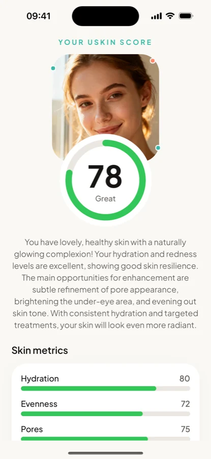
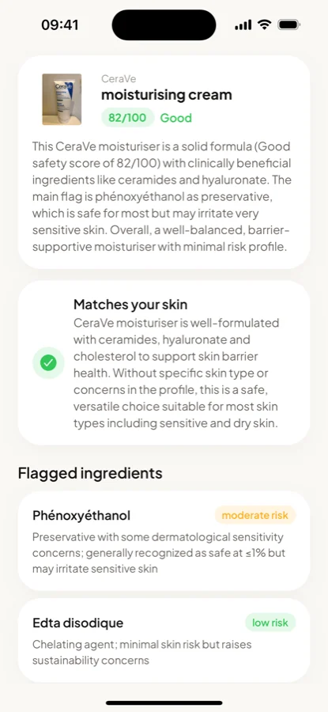
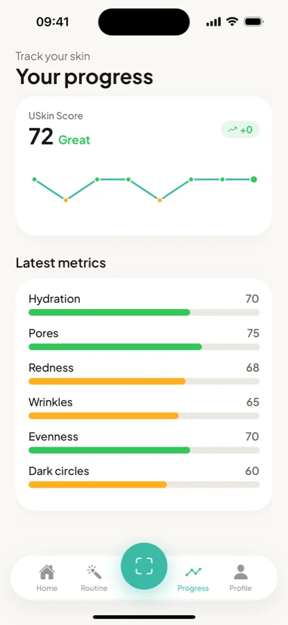

Your skin,
finally
understood.
One selfie. Six metrics. Zero jargon.
USkin is a complete read on your skin. Take one selfie for a score across six metrics, scan any product to see whether it actually fits you, and watch the numbers move week after week.
Read your whole face

- Fits your skinBased on your last scan
- Worth knowingFragrance high in the list
- Plain languageNo chemistry degree needed
Know what's in it
before you buy it

Watch your skin change,
week after week
The ingredients, in
words people actually use
Scan a barcode and USkin names what's inside — and what it's for — without the label jargon.
Retinol
A form of vitamin A, used for texture and fine lines.
Niacinamide
A form of vitamin B3, often used for tone and oiliness.
Squalane
An emollient, usually plant-derived, that softens skin.
Salicylic acid
A BHA that works inside the pore rather than on top.
What the number
is actually made of
Your USkin Score is a 0–100 read built from six things the camera can see. No mystery, no black box.
- HydrationHow well your skin is holding on to moisture.
- EvennessHow consistent your tone is across your face.
- PoresHow visible they are, especially around the T-zone.
- RednessFlushing and visible irritation.
- WrinklesFine lines around the eyes and forehead.
- Dark circlesShadowing and colour under the eyes.
USkin gives cosmetic, informational insights — a well-informed second opinion, not a diagnosis. Good, even lighting and bare skin give the most reliable read.
Three taps to a routine
that fits
No forms to fill in, no appointment to book, no scrolling reviews written for someone else's face.
- 01
Snap a selfie
Front camera, decent light, bare skin. That's the whole setup.
- 02
Get your score
AI reads all six metrics and tells you which one to focus on first.
- 03
Scan your shelf
Point at any product barcode to see whether it suits the skin you actually have.
Try it free for
three days
Download and scan for free. Unlock unlimited scans, your routine and progress tracking with USkin Pro — cancel any time before the trial ends and you're not charged.
USkin Pro
3 days freethen $29.99 / year
- Unlimited AI face scans
- Unlimited product safety scans
- Your personalised routine
- Progress tracking over time
- Cancel anytime in the App Store
A weekly plan is also available in the app. Prices shown in USD; your local price appears at checkout.
FAQ
Is my selfie stored anywhere?
No. Your photo is sent over an encrypted connection to be analysed and is never saved to our servers — only the resulting scores and notes are kept in your account, and you can delete them at any time from your Profile.
How accurate is the skin score?
USkin gives cosmetic, informational insights based on what's visible in your photo — think of it as a well-informed second opinion, not a diagnosis. Good, even lighting and bare skin give the most reliable read.
Do I get charged during the free trial?
No. The 3-day trial is free, and you can cancel any time before it ends directly in the App Store. If you don't cancel, the subscription renews automatically at the price shown.
Which products can I scan?
Any skincare or cosmetic product with a barcode. USkin looks up the ingredients, flags the ones worth knowing about in plain language, and tells you whether it suits your skin profile.
Is there an Android version?
Not yet — USkin is currently iPhone only, and needs iOS 16.4 or later.
So — do you actually
know what your
skin needs?
Either way, it takes one selfie to find out.